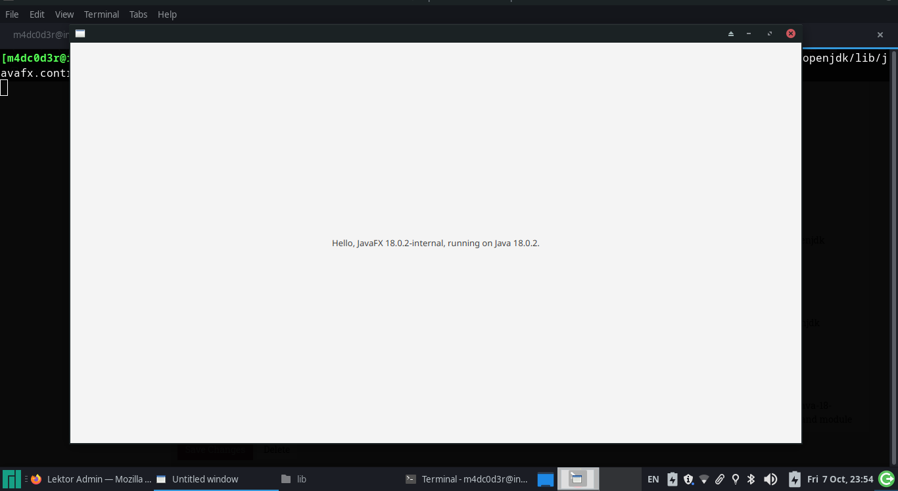

How to install and start developing JavaFX applications on Manjaro Linux
Arch Linux itself and Manjaro only officially support the OpenJDK, as that is the non-proprietary version. However, the Oracle package can be installed from the AUR as well, but it's not the recommended way to install anything. In fact since i made the decision to start using Manjaro i never used the AUR to install anything as there a lot of security and even stability concerns.
So we will only discuss installing OpenJDK from the official repositories. All of the OpenJDK packages can be installed in terminal with pacman. you can search for openjdk yourself to see what version suits you by running :
pacman -Ss openjdk
The packages you need will depend on what kind of programs you’re developing. We’ll go through all the options below. You can also choose between versions.
- Headless JRE = minimal Java runtime, used for executing non-GUI Java programs.
- Full JRE = full Java runtime, used for executing GUI Java programs.
- JDK = Java Development Kit, always needed for developing Java programs.
- Documentation = JDK help pages.
- Sources = JDK source files.
Install OpenJDK 18
the default version at the time of writing this post is openjdk18 .. to install the default version just run the following :
sudo pacman -S jre-openjdk-headless jre-openjdk jdk-openjdk openjdk-doc openjdk-src
Test Your Java Installation
You can check if Java is installed and see what version you’re running by executing this command:
java -version
This should return something like :
openjdk version "18.0.2" 2022-07-19
OpenJDK Runtime Environment (build 18.0.2+0)
OpenJDK 64-Bit Server VM (build 18.0.2+0, mixed mode)
Installing JavaFX
Now we installed OpenJDK successfully and tested our Java Installation, it's time to install JavaFX, and by JavaFX i mean OpenJFX. With same steps we did when installing OpenJDK let's search for OpenJFX by running :
pacman -Ss openjfx
Again you will need to choose the version you wish to install. For me i will simply go the default version 18. and run the following commands :
pacman -S java-openjfx java-openjfx-doc java-openjfx-src
Show Time
After successfully installing OpenJFX, it's time to write a hello world GUI application to test thing out. In the terminal run nano HelloFX.java and paste the following code:
import javafx.application.Application;
import javafx.scene.Scene;
import javafx.scene.control.Label;
import javafx.scene.layout.StackPane;
import javafx.stage.Stage;
public class HelloFX extends Application {
@Override
public void start(Stage stage) {
String javaVersion = System.getProperty("java.version");
String javafxVersion = System.getProperty("javafx.version");
Label l = new Label("Hello, JavaFX " + javafxVersion + ", running on Java " + javaVersion + ".");
Scene scene = new Scene(new StackPane(l), 640, 480);
stage.setScene(scene);
stage.show();
}
public static void main(String[] args) {
launch();
}
}
Next we need to compile it by running this command :
javac --module-path /usr/lib/jvm/java-18-openjdk/lib/javafx.base.jar:/usr/lib/jvm/java-18-openjdk/lib/javafx.controls.jar:/usr/lib/jvm/java-18-openjdk/lib/javafx.graphics.jar --add-modules javafx.controls HelloFX.java
Finally run the program :
java --module-path /usr/lib/jvm/java-18-openjdk/lib/javafx.base.jar:/usr/lib/jvm/java-18-openjdk/lib/javafx.controls.jar:/usr/lib/jvm/java-18-openjdk/lib/javafx.graphics.jar --add-modules javafx.controls HelloFX.java
You Should see a window popping up

⚠️ Warning
if you don't explicitly add javafx.base.jar , javafx.controls.jar, javafx.graphics.jar and instead used just /usr/lib/jvm/java-18-openjdk/lib you will run to an java.lang.LayerInstantiationException : Package jdk.internal.jimage.decompressor in both module java.base and module jrt.fs because on Arch both JDK and JavaFX libs are mixed in the same folder and cause the issue
Conclusion
In this post, we learned how to install Java OpenJDK as well as OpenJFX, on Manjaro Linux. We also saw how to compile and run a JavaFX application , Now you will be able to develop all manner of Java programs and JavaFX on your Manjaro system.